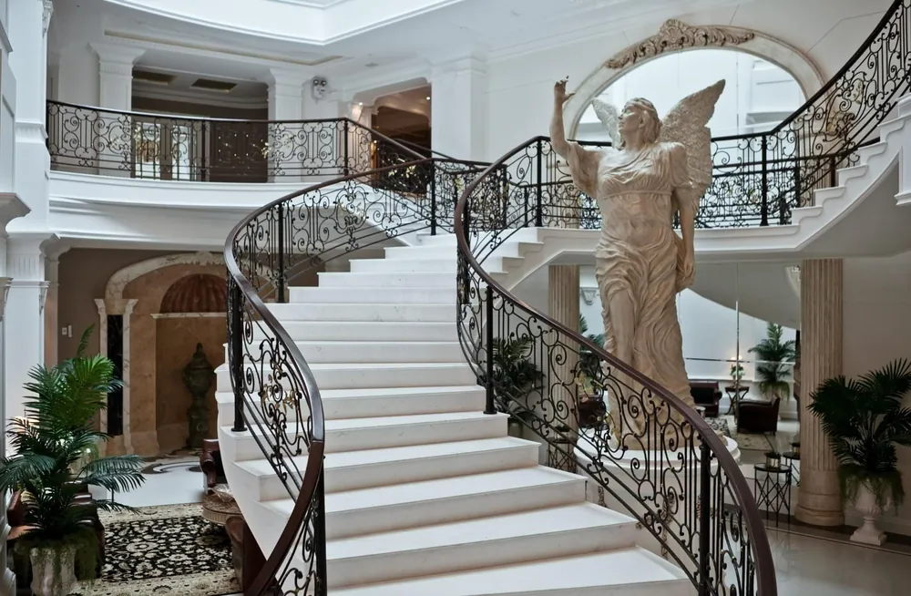
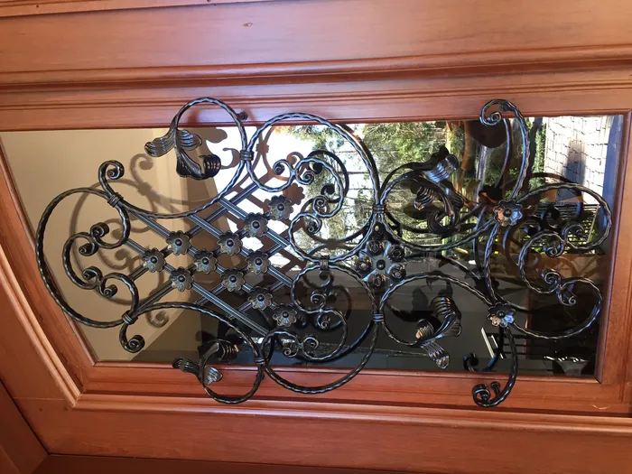

Ferro forjado
A arte do ferro forjado está no centro do que a Esquadriper faz. Cada detalhe, cada curva e cada padrão é trabalhado à mão, e a peça vira parte da arquitetura.

Guarda-corpo da escadaria do Villa Serena Home Club, em Balneário Camboriú 
Grade para porta, com flor central 
Porta forjada 
Sacada 
Cerca e portão 
Corrimão de escada 
Portão de chapa com arremate forjado 
Corrimão de parede
Do modelo pronto ao projeto do cliente
Além dos modelos já definidos, fabricamos peças personalizadas, conforme as especificações ou o projeto do cliente.
Quem procura ferro forjado ou serralheria encontra as duas coisas aqui: a beleza do forjado e a força da serralheria industrial, de estruturas metálicas a portões industriais.
Peça seu orçamento
Mande pelo WhatsApp o que precisa, com fotos ou o projeto. Atendemos residências, comércio e indústria.
- (47) 3466-0285
- (47) 3043-2014
- (47) 3436-2054
- Rua Monsenhor Gercino, 4120, Jarivatuba, Joinville (SC)